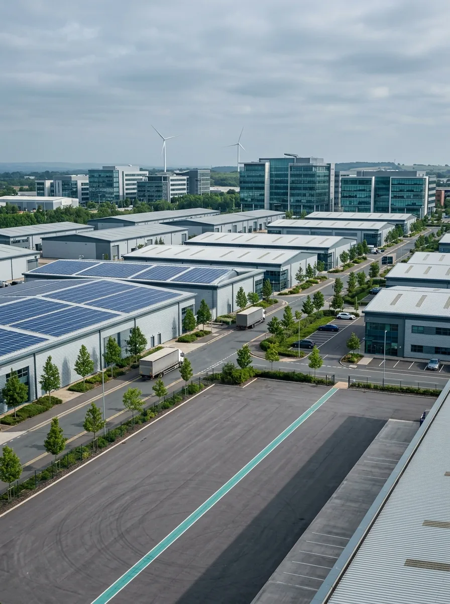
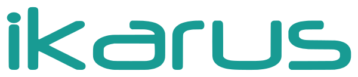

İçindekiler
Bu sayıda proje bazlı devlet yardımındaki değişiklikler, KOSGEB'in yeni çağrı ve kredi programları ile Türkiye Yapay Zekâ Eylem Planı yer alıyor.
Proje Bazlı Devlet YardımıDeğişiklikler
9 Ağustos 2026 tarihli ve 33335 sayılı Resmî Gazete'de yayımlanan 11572 sayılı Cumhurbaşkanı Kararı, 2016/9495 sayılı Proje Bazlı Devlet Yardımı Kararı'nda kapsamlı değişiklikler yapmıştır. Aşağıda değişiklikler madde bazında, önceki metinle farkları öne çıkarılarak özetlenmiştir. Yatırımcılar açısından en fazla dikkat gerektiren üç husus; fizibilite raporunun artık protokollü kalkınma ve yatırım bankalarınca hazırlanacak olması, geriye dönük 5 yıllık faaliyet raporu yükümlülüğüdür.
1. Başvuru Süreci ve Fizibilite Raporu
- Bakanlık yalnızca davet mektubuyla davet edebiliyordu. Artık davet mektubuna ek olarak resmî web sitesi veya dijital platformlar üzerinden duyuru ile de çağrıda bulunulabilecek; çağrıda özel koşullar belirlenebilecektir.
- Fizibilite raporu artık yatırımcı tarafından değil, Genel Müdürlük ile protokol imzalamış bir kalkınma ve yatırım bankasınca, EK-1 formatına uygun olarak hazırlanacaktır.
- Teknoloji Hamlesi Programı başvurularına 4. maddenin diğer fıkraları uygulanmayacak; süreç Bakanlıkça belirlenecektir.
2. Asgari Yatırım Tutarları
- Öncelikli Ürün Listesi / Teknoloji Hamlesi Programı yatırımları için asgari 100 milyon TL sabit yatırım; diğer yatırımlar için 2 milyar TL.
- Önemli yenilik ise diğer yatırımlarda 2 milyar TL eşiği artık “sabit yatırım tutarı ya da Ar-Ge harcaması” üzerinden sağlanabilmektedir — Ar-Ge harcaması alternatif kriter olarak eklenmiştir.
- 5. maddenin 7. fıkrası yürürlükten kaldırılmıştır.
3. Faaliyet Raporu Yükümlülüğü
Yatırımcı, tamamlama vizesinden sonra 5 yıl boyunca yılda bir kez, yararlanılan destek tutarlarını da içeren faaliyet raporunu Bakanlığa ibraz edecektir.
Dikkat: Bu madde 26/11/2016 tarihinden geçerli olacak şekilde yürürlüğe girmektedir. Dolayısıyla mevcut projeleri de kapsamaktadır.
4. Yatırıma Başlama Şartı
- Destek Kararı'nın yürürlüğünden itibaren 3 yıl içinde, en az 200 milyon TL veya yatırım tutarının %10'u kadar harcamanın tevsik edilmesi gerekmektedir; aksi halde Destek Kararı yürürlükten kaldırılır.
- Cumhurbaşkanınca ilave süre verilebilir. 28/6/2020 tarihinden önce yürürlüğe konulmuş destek kararlarında üç yıllık süre 28/6/2020'de başlar.
5. Enerji ve Sigorta Primi İşveren Hissesi Desteği
- Kısmen işletmeye geçişte destekten yararlanma koşulları netleştirilmiştir: en az iki eksper tespiti ve YMM raporu şartı aranmaktadır.
- Tamamlama vizesinden önce yararlanılabilecek toplam enerji desteği, azami enerji desteği tutarının %50'sini geçemez.
- Enerji desteği; eski dönem borçları, gecikme faizleri, ceza bedelleri, nakliye, iletim, dağıtım, vergi ve fon gibi kalemler hariç, faturadaki fiili tüketim harcaması esas alınarak hesaplanır.
6. Diğer Değişiklikler
- Kararda ve Destek Kararı'nda yer almayan hususlar, Destek Kararı'nın yürürlük tarihinde geçerli Yatırımlarda Devlet Yardımları Hakkında Karar hükümlerine göre sonuçlandırılacaktır.
- Yatırım yeri tahsisi artık Çevre, Şehircilik ve İklim Değişikliği Bakanlığı usul ve esaslarına göre yapılacaktır.
- Teknoloji Hamlesi Programı yatırımları KOSGEB ve/veya TÜBİTAK tarafından da doğrudan desteklenebilecek; firma öz kaynağıyla yaptığı harcamalar da yatırım bütünlüğü kapsamında değerlendirilebilecektir.
7. Bakan'a Sözleşme Yetkisi
Asgari 5 milyar TL sabit yatırımlı ve komple yeni yatırım niteliğindeki projelerde; 4875 sayılı Doğrudan Yabancı Yatırımlar Kanunu'nda tanımlı yabancı yatırımcılar (veya paylarının %100'ü bunlara ait iştirakler) ile özel hukuka tabi yatırım sözleşmesi imzalamaya Bakan yetkili kılınmıştır.
8. Proje Fizibilite Formatı Yenilendi
- Yeni format beş bölümden oluşmaktadır: Firma ve Proje Künyesi, Teknik Değerlendirme, Ekonomik Değerlendirme, Mali Değerlendirme, Genel Değerlendirme ve Sonuç.
- Müşteri başvurularında kullanılan fizibilite şablonlarının bu yeni yapıya göre revize edilmesi gerekmektedir.
Yürürlük
- Faaliyet raporu maddesi: 26/11/2016 tarihinden geçerli olmak üzere yayımı tarihinde.
- Diğer hükümler: 9 Ağustos 2026
Proje Bazlı Teşvik Sistemi
Aşağıda; 6745 sayılı Kanun ve 2016/9495 sayılı “Yatırımlara Proje Bazlı Devlet Yardımı Verilmesine İlişkin Karar” ile bu Kararda 9 Ağustos 2026 tarihli ve 33335 sayılı Resmî Gazete'de yayımlanan 11572 sayılı Cumhurbaşkanı Kararı ile yapılan değişiklikler çerçevesinde, Proje Bazlı Teşvik Sistemi'nin temel esasları özetlenmiştir. Nottaki tutar ve şartlar, 9 Ağustos 2026 değişikliği sonrası güncel metne göredir.
1) Proje Bazlı Teşvik Sistemi
Ülkemizin mevcut veya gelecekte ortaya çıkabilecek kritik ihtiyaçlarını karşılayacak, arz güvenliğini sağlayacak, dışa bağımlılığı azaltacak, teknolojik dönüşümü gerçekleştirecek; yenilikçi, Ar-Ge yoğun ve katma değeri yüksek yatırım projelerinin proje bazlı olarak özel destek mekanizmalarıyla desteklenmesini amaçlayan sistemdir. Her proje, kendine özgü destek paketiyle ve Cumhurbaşkanı Kararı (Destek Kararı) alınarak desteklenir.
2) Kapsam
Öncelikli Ürün Listesindeki ürünlerin üretimine yönelik yatırımlar ile Teknoloji Hamlesi Programı kapsamındaki yatırımlar ve stratejik nitelikli diğer büyük ölçekli yatırımlar hedeflenir. Başvurular, konusunda yetkin firmalardan çağrı veya davet yoluyla toplanır.
3) Asgari Yatırım Tutarı
Öncelikli Ürün Listesi / Teknoloji Hamlesi Programı yatırımları için asgari 100 milyon TL sabit yatırım; diğer yatırımlar için asgari 2 milyar TL sabit yatırım tutarı ya da Ar-Ge harcaması şartı aranır. 9 Ağustos 2026 değişikliğiyle eşikler yükseltilmiş (önceki 50 milyon TL / 1 milyar TL) ve diğer yatırımlarda Ar-Ge harcaması alternatif kriter olarak eklenmiştir.
4) Başvuru Usulü
Müracaatlar iki usulle toplanır:
5) Fizibilite Raporu
Değişiklik sonrası fizibilite raporu artık yatırımcı tarafından değil, Genel Müdürlük ile protokol imzalamış bir kalkınma ve yatırım bankasınca, Bakanlığın yayımladığı formata uygun olarak hazırlanır. Yatırımcı, davet/duyuruya istinaden dilekçe ile Bakanlığa müracaat eder.
6) Değerlendirme ve Karar Süreci
Süreç dört aşamadan oluşur:
7) Destek Unsurları
Projeye özgü olarak beş başlık altında destek sağlanabilir:
8) Yatırıma Başlama Şartı
Mücbir sebep ve fevkalade hâl durumları hariç olmak üzere, Destek Kararı'nın yürürlük tarihinden itibaren 3 yıl içinde asgari 200 milyon TL veya yatırım tutarının %10'u kadar harcamanın tevsik edilmesi gerekir; aksi hâlde Destek Kararı yürürlükten kaldırılır. Cumhurbaşkanınca ilave süre verilebilir.
9) Faaliyet Raporu
Yatırımcı, tamamlama vizesini müteakip 5 yıl boyunca yılda bir kez, yararlanılan destek tutarlarını da içeren faaliyet raporunu Bakanlığa ibraz etmekle yükümlüdür. Bu düzenleme 26/11/2016 tarihinden geçerli olacak şekilde yürürlüğe girdiğinden, mevcut/devam eden projeleri de kapsar.
10) Enerji ve Sigorta Primi İşveren Hissesi Desteğinde Dikkat Edilmesi Gerekenler
- Kısmen işletmeye geçişte destekten yararlanmak için en az iki eksper tespiti ve YMM raporu şartı aranır.
- Tamamlama vizesinden önce yararlanılabilecek toplam enerji desteği, azami enerji desteği tutarının %50'sini geçemez.
- Enerji desteği; eski dönem borçları, gecikme faizleri, ceza bedelleri, nakliye, iletim, dağıtım, vergi ve fon gibi kalemler hariç, faturadaki fiili tüketim harcaması esas alınarak hesaplanır.
11) Teknoloji Hamlesi Programı Yatırımlarına Özel Hususlar
Bu yatırımlar KOSGEB ve/veya TÜBİTAK tarafından da doğrudan desteklenebilir.
12) Bakan'a Tanınan Yatırım Sözleşmesi Yetkisi
Asgari 5 milyar TL sabit yatırım tutarındaki ve komple yeni yatırım niteliğindeki projelerde; 4875 sayılı Doğrudan Yabancı Yatırımlar Kanunu'nda tanımlı yabancı yatırımcılar (veya paylarının %100'ü bunlara ait iştirakler) ile özel hukuka tabi yatırım sözleşmesi imzalamaya Sanayi ve Teknoloji Bakanı yetkili kılınmıştır.
13) Proje Fizibilite Formatı
Yenilenen EK-1 fizibilite formatı beş bölümden oluşur:
- Bölüm 1 – Firma ve Proje Künyesi,
- Bölüm 2 – Teknik Değerlendirme,
- Bölüm 3 – Ekonomik Değerlendirme,
- Bölüm 4 – Mali Değerlendirme,
- Bölüm 5 – Genel Değerlendirme ve Sonuç.
Müşteri başvurularında kullanılan fizibilite şablonlarının bu yeni yapıya göre revize edilmesi gerekir.
14) 9 Ağustos 2026 Değişiklikleriyle Öne Çıkan Başlıklar
- Fizibilite raporu artık protokollü kalkınma ve yatırım bankalarınca hazırlanacak.
- Davet mektubuna ek olarak duyuru (web sitesi/dijital platform) usulüyle de çağrı yapılabilecek.
- Asgari tutarlar 100 milyon TL / 2 milyar TL'ye yükseltildi; Ar-Ge harcaması alternatif kriter oldu.
- Tamamlama vizesinden sonra 5 yıl boyunca geriye dönük faaliyet raporu yükümlülüğü (26/11/2016'dan geçerli).
- Yatırıma başlama şartı netleştirildi (3 yılda 200 milyon TL veya %10 harcama).
- Yatırım yeri tahsisi, Çevre, Şehircilik ve İklim Değişikliği Bakanlığı usul ve esaslarına bağlandı.
- Asgari 5 milyar TL'lik projelerde Bakan'a yabancı yatırımcıyla sözleşme imzalama yetkisi verildi.
- EK-1 proje fizibilite formatı yenilendi.
KOSGEB — COP31 Çağrısı
KOSGEB, Teknoloji Merkezi (TEKMER) Destek Programı kapsamında 2026-01 numaralı COP31 Hızlandırma Çağrısını 08 Ağustos 2026 tarihinde ilan etmiştir. Çağrı, Türkiye'nin Kasım 2026'da Antalya'da ev sahipliği yapacağı COP31 (Conference of the Parties / bu yıl 31.'si Antalya'da düzenlenmektedir) İklim Zirvesi hazırlıkları çerçevesinde; yeşil dönüşüm ve iklim değişikliğiyle mücadele odaklı çözümler geliştiren, teknolojik derinliğe sahip ve ticarileşme potansiyeli yüksek işletmelerin hızlandırma programları aracılığıyla uluslararası görünürlük kazanmasını amaçlamaktadır.
Bu çağrıda başvuru sahibi, işletmelerin kendisi değil, hızlandırma programını yürütecek kuruluşlardır (TEKMER işleticileri ve GO sahibi TGB yönetici şirketleri). İşletmeler ise bu kuruluşların düzenleyeceği hızlandırma programlarına katılımcı olarak dahil olacaktır.
| Çağrı adı / no | COP31 Hızlandırma Çağrısı / 2026-01 |
| Program | Teknoloji Merkezi Destek Programı |
| İlan tarihi | 08 Ağustos 2026 |
| Başvuru dönemi | 09 – 30 Ağustos 2026 |
| Başvuru yapabilecekler | TEKMER işletici kuruluşları; GO (Girişim Ofisi) sahibi TGB (Teknoloji Geliştirme Bölgesi ya da genel kullanım adıyla Teknopark) yönetici şirketleri |
| Destek üst limiti | 6.500.000 TL |
| Destek türü / oranı | %100 oranında geri ödemeli destek |
| Kapsanan giderler | Yazılım, eğitim, danışmanlık, organizasyon ve tanıtım giderleri |
| Geri ödeme koşulları | Kurul karar tarihinden itibaren 36 ay geri ödemesiz dönem; ardından 3'er aylık dönemlerde 4 eşit taksit |
| Uygulama dönemi | Programlar 2026 yılı içinde hayata geçirilecek |
| Başvuru kanalı | e-Devlet üzerinden KOSGEB e-hizmetler |
1. Desteklenecek Tematik Alanlar
Hızlandırma programlarının aşağıdaki alanlardan bir veya birden fazlasını kapsaması ve katılımcı işletmelerin ürünlerinin seçilen tema ile uyumlu olması gerekmektedir:
2. Çağrıya İlişkin Özel Şartlar
Desteklenecek hızlandırma programlarının aşağıdaki koşulları sağlaması zorunludur:
- En az 10 işletmeyi kapsaması
- En az 1 ay, en fazla 3 ay sürmesi
- Teknoloji Hazırlık Seviyesi (THS/TRL) en az 6 olan ürünlere yönelik olması
- Antalya'da düzenlenecek COP31 etkinliğinde gerçekleştirilecek en az bir faaliyeti içermesi
KOSGEB — Yapay Zekâ Kredisi
KOSGEB; teknoloji ve yenilik odaklı işletmelerin yapay zekâ teknolojilerini iş süreçlerinde etkin şekilde kullanmalarını sağlamak, dijital kapasitelerini ve üretim yetkinliklerini geliştirmek amacıyla GO Dijital tarafından yürütülen Yapay Zekâ Kredisi'ni duyurmuştur.
Yapay Zekâ Kredisi;
- Yüksek performanslı işlem kaynakları (GPU, CPU, RAM),
- Güvenli veri depolama hizmetleri,
- Yapay zekâ veri merkezi hizmetleri,
- Yapay zekâ araçları ve platform hizmetleri
gibi giderlerin karşılanmasında kullanılabilecektir.
Program kapsamında işletmelere 500 bin TL ile 5 milyon TL arasında kredi imkânı sunulmaktadır. Kredi geri ödemeleri, destek başlangıç tarihinden itibaren 12 ay geri ödemesiz dönem sonrasında 12 ay eşit taksit halinde gerçekleştirilecektir.
Krediye başvurulabilmesi için işletmenin:
- Geçerli Teknogirişim Rozetine sahip olması,
- KOSGEB Veri Tabanında kayıtlı, aktif ve güncel işletme beyanına sahip olması,
- İşletmenin GO Dijital Cüzdan hesabı olması gerekmektedir.
Yapay Zekâ Kredi Programı başvuruları 9 Temmuz – 31 Aralık 2026 tarihleri arasında gerçekleştirilecek olup başvurular KOSGEB KOBİ Bilgi Sistemi üzerinden alınacak ve uygun bulunan işletmeler kredi kullanım işlemlerini GO Dijital Cüzdan uygulaması aracılığıyla yürütülecektir.
KOSGEB — Kapasite Geliştirme
KOSGEB; küçük ve orta ölçekli işletmelerin büyüme ve gelişimini desteklemek amacıyla hayata geçirilen Kapasite Geliştirme Destek Programı'nın 2026 yılı 3. dönem başvurularını almaya başlamıştır.
Program kapsamında kredi alt limiti 1 milyon TL, kredi üst limiti 20 milyon TL'dir.
Tedarikçi geliştirmeye yönelik savunma, havacılık ve uzay alanında iş birliği yapılan paydaşların(*) bildirdiği işletmeler için ise kredi üst limiti 30 milyon TL olarak belirlenmiştir. Proje süresi 24 ay, kredi vadesi 36 ay olacak.
Kapasite Geliştirme Destek Programı aşağıdaki alanlarda finansman sağlayacaktır:
- Makine, Teçhizat ve Kalıp Giderleri: Üretim kapasitesini artırmaya yönelik teknoloji yatırımları
- Yazılım Giderleri: Dijital dönüşümü destekleyen kurumsal yazılım harcamaları
- Personel Giderleri: Nitelikli insan kaynağı istihdamına yönelik maliyetler
- Hizmet Alımı Giderleri: Eğitim, danışmanlık ve yönderlik, belgelendirme, test ve analiz, pazarlama, tasarım ve sınai mülkiyet haklarına ilişkin hizmetler
- İşletme Sermayesi: Proje ile ilişkili diğer finansman ihtiyaçları
Bu destek programından yararlanabilmesi için işletmenin;
- NACE koduna göre aşağıdaki sektörlerde faaliyet gösteren işletme olması,
- KOSGEB Veri Tabanında kayıtlı, aktif durumda ve İşletme Beyanının güncel olması,
- İşletme sınıfının küçük veya orta büyüklükte olması,
- Türk Ticaret Kanunu'nda tanımlı gerçek veya tüzel kişi statüsünde olması,
- Hızlı büyüyen işletme olması
gerekmektedir.
Teknogirişim Rozeti'ne sahip olan ya da tedarikçi geliştirmeye yönelik belirlenen sektörlerde iş birliği yapan işletmelerde hızlı büyüme şartı aranmamaktadır.
- Program son başvuru tarihi: 15 Eylül 2026
(*) KOSGEB ile Protokol İmzalanan Paydaşlar
Türkiye Yapay Zekâ Eylem Planı
Sanayi ve Teknoloji Bakanlığı tarafından açıklanan Türkiye Yapay Zekâ Eylem Planı (2026–2030), yalnızca bir teknoloji belgesi değil; önümüzdeki dönemde işletmeler için somut destek, teşvik ve finansman kapıları açan bir yol haritası. Planın 2030'a kadar 1 trilyon TL'yi aşan bir ekonomik değer üretmesi öngörülüyor. Aşağıda, özet şekilde sunulmuştur:
Plan kısaca ne getiriyor?
Plan; farkındalık ve yetenek (Fark Et), altyapı ve kullanım (İstifade Et), üretim ve finansman (Üret) ve yönetişim (Yönet) olmak üzere dört eksende 16 eylemden oluşuyor. İşletmeler açısından asıl önemli olan ise bu eylemlerin içine yerleştirilmiş kupon, kredi, fon, yatırım teşviki ve vergi/Ar-Ge avantajlarıdır.
| Fırsat / Destek | Firmanıza ne sağlar? | Öncelikli faydalanan |
|---|---|---|
| 1) FİNANSMAN VE NAKİT DESTEKLER | ||
| KOBİ Yapay Zekâ Kuponları ve Hazır Çözüm Paketleri | Yazılım aboneliği, bulut GPU/CPU kullanımı, veri hizmetleri ve güvenlik/uygunluk testlerini karşılayan kuponlar; fikirden ürüne kadar kademeli destek. (Hedef: 1.000 kupon.) | KOBİ'ler ve girişimler |
| “Herkes için GPU” işlem gücü kredileri | Pahalı yapay zekâ işlem gücüne düşük maliyetle erişim; GPU-saat kredileri ve mikro-kredi/paket destekleri. | Girişim, KOBİ, araştırmacı |
| Ulusal YZ Araştırma Fonu ve YZ Büyüme Fonu | Erken aşamada hibe/destek, olgun girişimde Seri A/B yatırımı, borç ve garanti desteği. Personel, bulut, veri edinimi gibi kalemler uygun gider. (10 + 15 milyar TL.) | Ar-Ge yapan firmalar; ölçeklenen girişimler |
| 2) YATIRIM TEŞVİKLERİ | ||
| HIT-30 Yüksek Teknoloji Yatırım Programı (Veri Merkezi ve YZ çağrıları) | Büyük ölçekli yatırıma teşvik paketi; tek pencereden başvuru ve ön uygunluğun en çok 30 iş gününde tamamlanması; düşük karbonlu elektrik alım anlaşmaları. | Yatırımcılar; veri merkezi/altyapı yatırımı yapanlar |
| Yapay Zekâ Büyüme Bölgeleri ve Mükemmeliyet Merkezleri | Enerjisi ve altyapısı hazır, izinleri hızlandırılmış özel statülü kampüsler; KOBİ ve araştırmacıya ortak GPU erişimi ve hızlı prototip-test imkânı. | Yatırımcı, KOBİ, araştırmacı |
| 3) VERGİ VE AR-GE AVANTAJLARI | ||
| Veri paylaşımı teşvikleri | Verisini güvenli biçimde paylaşan kuruluşlara vergi/Ar-Ge indirimi, GPU/veri kredileri ve “Güvenilir Veri Sağlayıcı” statüsü. | Veri sahibi kurum ve şirketler |
| Çalışan dönüşümü ve robotik prototip teşvikleri | Çalışan eğitiminde Ar-Ge merkezi/teknokent teşviklerinden yararlanma; robotik/fiziksel YZ prototipinde ithal bileşenlere teşvik ve istisna; çift kullanımlı teknoloji destekleri. | Ar-Ge merkezleri, teknokent, üretim/savunma firmaları |
| Fırsat / Destek | Firmanıza ne sağlar? | Öncelikli faydalanan |
|---|---|---|
| 4) PAZAR ERİŞİMİ VE İHRACAT | ||
| Kamu pazarına öncelikli erişim | Kamuda başarıyla kullanılan çözümlere “dijital rozet” ve Tekno Katalog üzerinden alım önceliği; teknogirişim belgesiyle kamu ihalelerine katılım kolaylığı. | Teknogirişimler, çözüm sağlayıcılar |
| İhracat ve lisanslama desteği | Sertifikasyon, güvenlik testi ve yasal uyumu tek dosyada toplayan “ihraca hazır paket”; performansa dayalı ihracat destekleri. | Model/ürün geliştiren firmalar; ihracatçılar |
| 5) TEST VE MEVZUAT KOLAYLIĞI | ||
| Düzenleyici deney alanları (sandbox) | Yeni ürünü, kalıcı mevzuata takılmadan denetimli bir ortamda test etme; başarılı pilotun hızla piyasaya veya kamu alımına geçişi. | Finans, sağlık, enerji, mobilite, telekom firmaları |
- KOBİ ve girişimler: Önce KOBİ Yapay Zekâ Kuponları, “Herkes için GPU” kredileri ve Araştırma/Büyüme Fonları.
- Yatırımcı ve altyapı firmaları: HIT-30 çağrıları ve Yapay Zekâ Büyüme Bölgeleri.
- Ar-Ge merkezi / teknokent firmaları: Çalışan dönüşümü ve veri paylaşımı teşvikleri.
- Üretim, otomotiv ve savunma tedarikçileri: Robotik/fiziksel YZ teşvikleri ve prototip istisnaları.
- İhracatçılar ile regülasyona tabi sektörler (finans, sağlık, enerji): İhraca hazır paket destekleri ve düzenleyici deney alanları.
Destek ve teşviklerin kapsamı, oran ve şartları, takvimi ilgili çağrı ve mevzuat yayımlandığında kesinleşecektir. Bu süreçte firmalar adına üç adımı öneriyoruz:
Bu üç adımda size destek olmaktan memnuniyet duyarız.

Departmanı